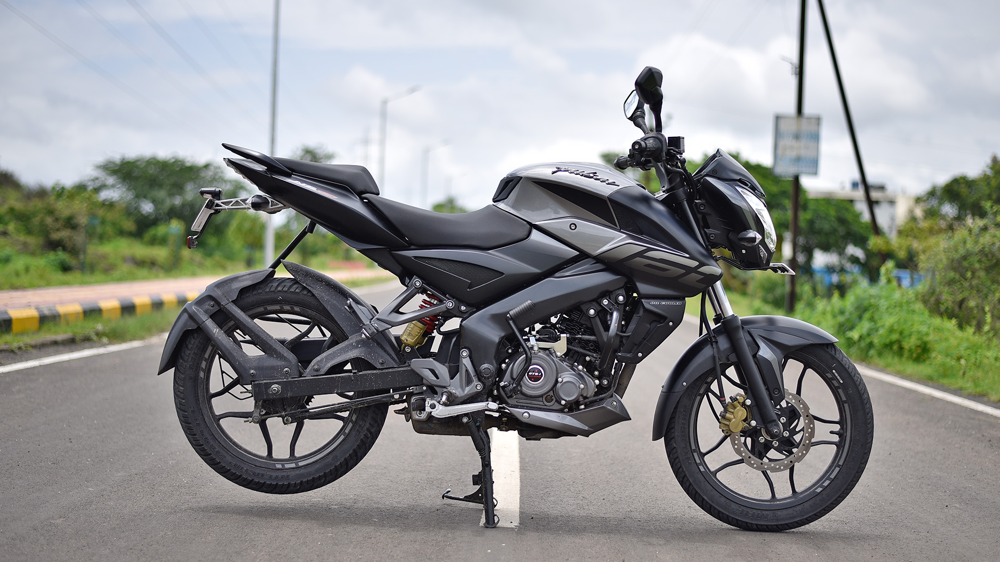
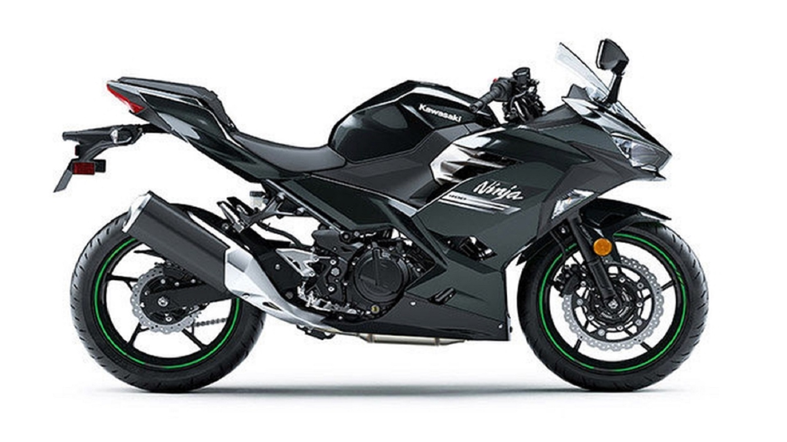

Mi primer sitio web sobre mis motos
"Bienvenidos a mi colección de motos! Soy un apasionado del mundo de las dos ruedas y me encanta coleccionar motocicletas de diferentes épocas y estilos. En mi garaje podrás encontrar desde clásicas motos de los años 50 hasta modernas superbikes de alta cilindrada. Cada una de ellas tiene su propia historia y personalidad, y me encanta compartir mis experiencias con otros entusiastas del motociclismo. ¡Explora mi colección y descubre por qué estas motos son mi pasión"
BAJAJ ROUSER NS 160
La Bajaj NS 160 es una motocicleta de estilo naked que combina un diseño agresivo con un rendimiento impresionante. Con un motor de 160 cc, es capaz de generar una potencia máxima de 15.5 hp y un torque de 14.6 Nm, lo que la convierte en una opción ideal para aquellos que buscan una moto ágil y rápida.
Además, cuenta con características como un sistema de frenos de disco, suspensión trasera monoshock y un tablero de instrumentos digital, lo que le brinda un mayor nivel de comodidad y seguridad al conductor.
En resumen, la Bajaj NS 160 es una moto emocionante y divertida para aquellos que buscan una combinación perfecta de rendimiento y estilo.
KAWASAKI NINJA 400
La Kawasaki Ninja 400 es una motocicleta deportiva que combina un diseño aerodinámico con un motor de alto rendimiento. Con un motor de 400 cc, es capaz de generar una potencia máxima de 49 hp y un torque de 38 Nm, lo que la convierte en una de las motos más poderosas de su clase.
Además, cuenta con características como un chasis de tubo de acero de alta resistencia, un sistema de frenos de disco con ABS y un tablero de instrumentos digital, lo que le brinda un mayor nivel de seguridad y comodidad al conductor.
En resumen, la Kawasaki Ninja 400 es una moto emocionante y potente para aquellos que buscan una experiencia de conducción deportiva de alta calidad.
